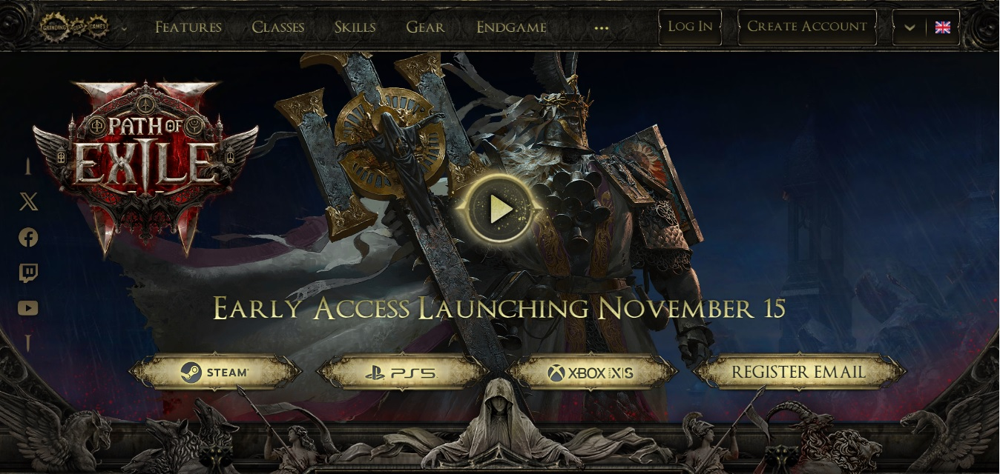

Bonjour! Je m'appelle Louis-James Leroux. Je vais vous faire une courte présentation de mon parcours scolaire et profesionnel ainsi que de mes intérêts.
Tout d'abord, j'ai complété une technique en génie industriel au collège Lionel-Groulx il y a environ 10 ans. Par la suite, j'ai changé de domaine et j'ai complété un BAC en administration à l'Université du Québec en Outaouais (UQO). Finalement, j'ai terminé un certificat en ressource humaine à l'École des hautes études commerciales de Montréal (HEC).
En ce qui concerne mon parcours profesionnel, j'ai débuté en travaillant en tant qu'emballeur à l'épicerie Métro et ce, pour plusieurs années afin
de pouvoir payer mes études. Lorsque j'ai terminé mon cheminement scolaire, j'ai commencé à travailler au CIUSSS du Centre-Sud-de-L'île-de-Montréal
en tant qu'agent administratif. Un an plus tard, j'ai été promu au poste de technicien en administration. Encore une année plus tard, j'ai été promu
au poste d'agent de gestion du personnel. Toutefois, après ces quelques années, j'ai remarqué que je n'aimais pas vraiment ce que je faisais et
j'ai
alors décidé de faire un changement de carrière. Me voilà donc ici dans la technique en programmation! :)
En ce qui a trait à mes intérêts, je dédie la majorité de mon temps libre à jouer à des jeux-vidéos.
Plus précisément, je préfère les jeux de type ARPG tels
que Path of Exile, Grim Dawn, Titan Quest, Last Epoch
et bien d'autres! J'ai hâte de pouvoir essayer l'early access de Path of Exile 2 qui débutera le
15 novembre 2024 (Voir l'image clickable).
À part les jeux-vidéos, j'aime jouer à des jeux de cartes tels que Magic : The Gathering, Flesh and Blood ainsi
que Grand Archive.
De plus, j'aime bien faire du patin à roues alignées lorsqu'il fait beau et je pratique à quelques occasions la guitare électrique.